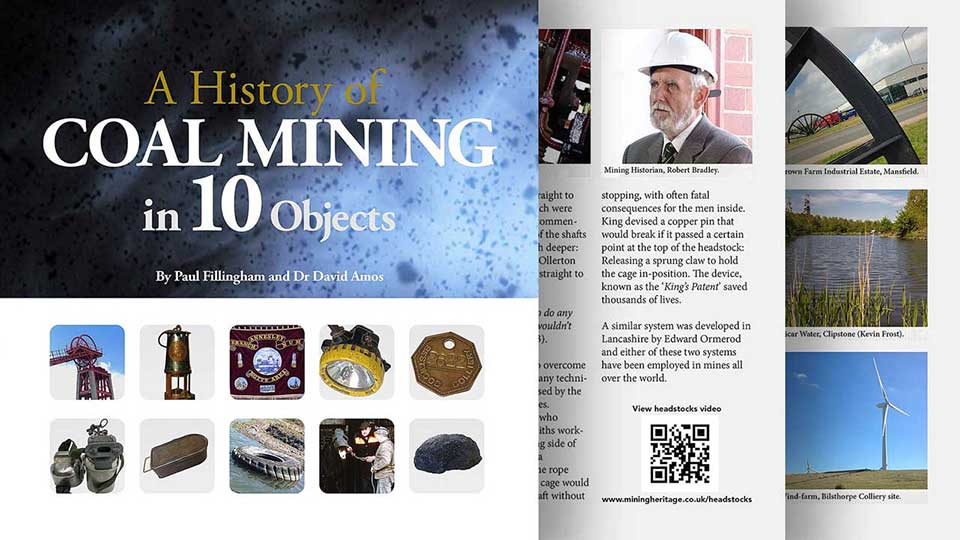
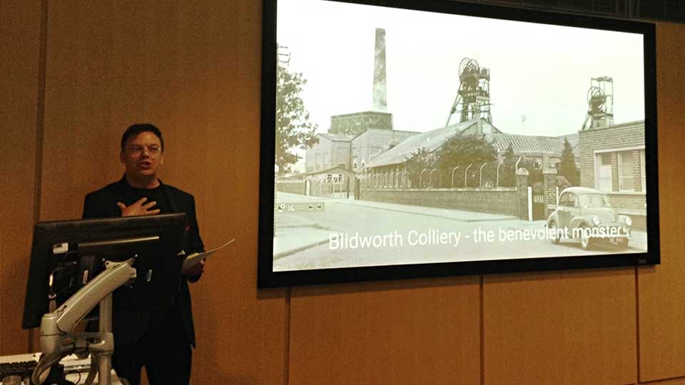

Heritage
Trails, talks, web, exhibitions
Although I skipped the family tradition of working down the pit, at the age of seventeen I was awarded an honorary membership by the Nottinghamshire branch of the National Union of Mineworkers in recognition for a mural I painted for their headquarters. The painting featured in A.R. Griffin's book The Nottinghamshire Coalfield 1881-1981. And I subsequently received a Coal Industry and Social Welfare Organisation (CISWO) scholarship to pursue my studies at Leeds Polytechnic School of Fine Art.
Digital Ambassadors
Since 2011, I have collaborated with historian Dr David Amos. David worked as a coal miner until pit closures forced him to switch career. Returning to education as an adult student, David recognised that digital media could help tell the story of the industry, its culture and communities. Our first collaboration was A History of Coal Mining in 10 Objects, a research project led by Dr Sarah Babcock at the University of Nottingham, supported by the Arts and Humanities Research Council (AHRC).

A History of Coal Mining in 10 Objects print companion to the website, films and public events.
The project explored ten iconic objects associated with the mining industry through the web, print, and events - a multichannel approach subsequently adopted for most of our projects. We also worked with student filmmakers to capture underground footage at Caphouse Colliery in Wakefield, combined with the historic setting of the D.H. Lawrence Birthplace Museum in Eastwood. The film Snap Tin was subsequently screened at the Broadway Cinema in Nottingham.
Whilst working at the former Nottinghamshire NUM headquarters, our team also uncovered a cache of twelve mining union banners. These were featured in the 2018, BBC TV series, Civilisations Stories: The Art of Mining and later included in a print publication Banners and Beyond (2020).

BBC crew at Pleasley Colliery filming a segment for Civilisations Stories: The Art of Mining.
Mine2Minds Education
Further collaborations followed at Bestwood Colliery Winding House, and the D.H. Lawrence Centre at Durban House in Eastwood, leading to the formation of the Community Interest Company, Mine2Minds Education (M2Me). Since 2015, Mine2Minds have worked on community outreach projects with leading universities and heritage organisations in Derbyshire, Nottinghamshire, Leicestershire, and South Yorkshire.
'A multichannel approach to heritage projects, augmenting website content with print, film, audio and events helps to maximise accessibility and engagement with communities.'

Paul Fillingham speaking at the Coal, Community and Change Symposium at Nottingham Trent University. 2019.
Heritage Projects
- CoalTown Days - East Midlands mining culture print. 2026
- Friends of Pleasley Pit 30th Anniversary publication. 2026
- Robin Hood's Blidworth and Blidworth Colliery village, mobile Trails. 2024
- Pleasley Pit Mining Museum Tour Guide, mobile trail and print. 2024
- Mine-craft the Prequel, workshops and print 2024
- Brinsley Circular, D.H. Lawrence themed coal and rail mobile trail. 2022
- Kirkby Heritage Centre, web design and mobile trail. 2021
- Banners and Beyond, education booklet for schools. 2020
- Mine-craft the Prequel: The Photographic Story of East Midlands Coal, print. 2019
- Coal, Community and Change, exhibition, website and interpretation app. 2019
- Cultural Trail Design Workshop, Nottingham Trent University. 2019
- Mine-craft the Prequel, Coal Authority, picture archive pilot project. 2018
- BBC TV, Civilisations Stories: The Art of Mining. 2018
- Songs and Rhymes from the Mines, book and audio CD. 2016
- Requiem for Coal, Commemorative walk, D.H. Lawrence Festival. 2015
- D.H. Lawrence Society, Jesse Chambers video and print. 2015
- Bestwood Colliery Winding Engine House, education ebook for schools. 2014
- BBC Radio 4, Saturday Live, D.H Lawrence, mining heritage segment. 2013
- Official Mining Heritage website for coal mining culture in the East Midlands. 2013
- A History of Coal Mining in 10 Objects, web, print, video, events. 2013
Heritage Trails
The MyTrail platform has been designed to support the creation and delivery of outdoor mobile trails and indoor tour guides. The design uses interactive maps, a simple numbered navigation interface and support for audio and video content. It can be used on mobile, tablets and desktop computers and has been trialed by heritage, arts and humanities and tourism groups. Mobile trails can be augmented with branded materials, print and exhibition panels, with QR codes to trigger content at any point of the trail.

Magritte's familiar bowler hatted Belgians motif.